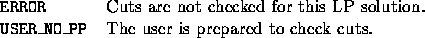

int user_prepare_to_check_cuts(void *user, int varnum, int *indices,
double *values)
This function is invoked after an LP solution is received but before any cuts are tested. Here the user can build up data structures (e.g., a graph representation of the solution) that can make the testing of cuts easier in the user_check_cuts function.

